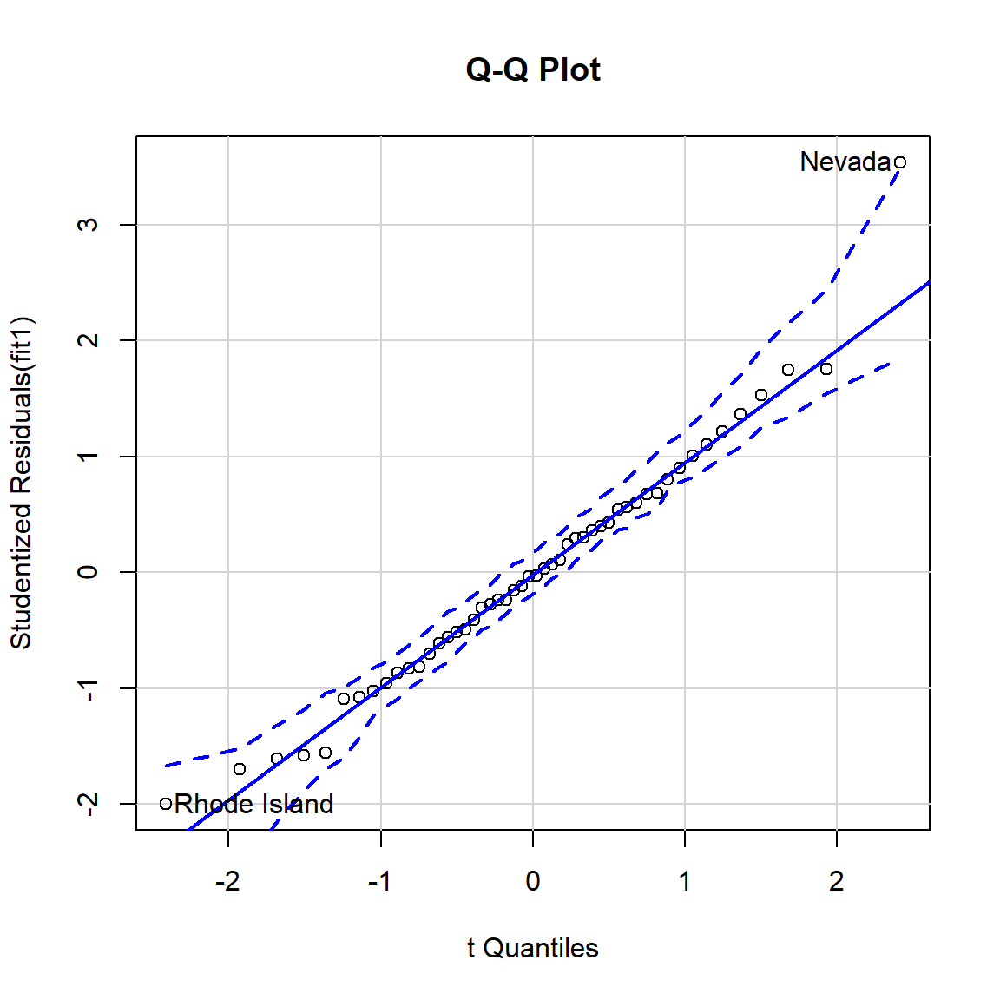

<link href="index_files/anchor-sections/anchor-sections.css" rel="stylesheet" />
<script src="index_files/anchor-sections/anchor-sections.js"></script>

<div id="TOC">
<ul>
<li><a href="#types-of-unusual-observations"><span class="toc-section-number">1</span> Types of Unusual Observations</a><ul>
<li><a href="#regression-outliers"><span class="toc-section-number">1.1</span> Regression Outliers</a></li>
<li><a href="#leverage"><span class="toc-section-number">1.2</span> Leverage</a></li>
<li><a href="#influential-observations"><span class="toc-section-number">1.3</span> Influential Observations</a></li>
<li><a href="#good-vs.-bad-leverage"><span class="toc-section-number">1.4</span> Good vs. Bad Leverage</a></li>
</ul></li>
<li><a href="#detecting-influential-observations"><span class="toc-section-number">2</span> Detecting Influential Observations</a><ul>
<li><a href="#graphic-diagnostics"><span class="toc-section-number">2.1</span> Graphic diagnostics</a><ul>
<li><a href="#a-scatter-plot-with-confidence-ellipse"><span class="toc-section-number">2.1.1</span> A scatter plot with Confidence Ellipse</a></li>
<li><a href="#quantile-comparison-plots-qq-plot"><span class="toc-section-number">2.1.2</span> Quantile Comparison Plots (QQ-Plot)</a><ul>
<li><a href="#rule-of-thumb"><span class="toc-section-number">2.1.2.1</span> Rule of Thumb</a></li>
</ul></li>
<li><a href="#added-variable-plots"><span class="toc-section-number">2.1.3</span> Added-variable plots</a></li>
</ul></li>
<li><a href="#numerical-diagnostics"><span class="toc-section-number">2.2</span> Numerical diagnostics</a><ul>
<li><a href="#hat-matrix"><span class="toc-section-number">2.2.1</span> Hat Matrix</a><ul>
<li><a href="#rule-of-thumb-1"><span class="toc-section-number">2.2.1.1</span> Rule of Thumb</a></li>
</ul></li>
<li><a href="#standardized-residuals"><span class="toc-section-number">2.2.2</span> Standardized Residuals</a><ul>
<li><a href="#rule-of-thumb-2"><span class="toc-section-number">2.2.2.1</span> Rule of Thumb</a></li>
</ul></li>
<li><a href="#studentized-residuals"><span class="toc-section-number">2.2.3</span> Studentized Residuals</a><ul>
<li><a href="#rule-of-thumb-3"><span class="toc-section-number">2.2.3.1</span> Rule of Thumb</a></li>
<li><a href="#studentized-residuals-the-bonferroni-adjustment"><span class="toc-section-number">2.2.3.2</span> Studentized Residuals-the Bonferroni adjustment</a></li>
</ul></li>
<li><a href="#dfbeta-and-dfbetas"><span class="toc-section-number">2.2.4</span> DFBeta and DFBetas</a><ul>
<li><a href="#rule-of-thumb-4"><span class="toc-section-number">2.2.4.1</span> Rule of thumb</a></li>
</ul></li>
<li><a href="#robust-distance"><span class="toc-section-number">2.2.5</span> Robust Distance</a></li>
<li><a href="#mahalanobis-distance"><span class="toc-section-number">2.2.6</span> Mahalanobis Distance</a><ul>
<li><a href="#rule-of-thumb-5"><span class="toc-section-number">2.2.6.1</span> Rule of Thumb</a></li>
</ul></li>
<li><a href="#cooks-distance"><span class="toc-section-number">2.2.7</span> Cook’s Distance</a><ul>
<li><a href="#rule-of-thumb-6"><span class="toc-section-number">2.2.7.1</span> Rule of Thumb</a></li>
</ul></li>
<li><a href="#dfits"><span class="toc-section-number">2.2.8</span> DFITS</a><ul>
<li><a href="#rule-of-thumb-7"><span class="toc-section-number">2.2.8.1</span> Rule of Thumb</a></li>
</ul></li>
</ul></li>
</ul></li>
<li><a href="#summary"><span class="toc-section-number">3</span> Summary</a></li>
</ul>
</div>

<div class="figure" style="text-align: center"><span id="fig:fig1"></span>

<p class="caption">
Figure 0.1: Outliers
</p>
</div>
<p>In the previous blog post, we’ve discussed the philosophy of outliers <a href="/2020/11/02/outliers-part1/">part 1</a> and outlier detection univariate methods <a href="/2020/11/03/outliers-part2/">part 2</a>. In this 3rd post, we are going to discuss more technical details of the outlier detection in regression.</p>
<p>A observation that is substantially different from all other ones can make a large difference in the results of regression analysis.</p>
<p>Outliers play important role in regression. More importantly, separated points can have a strong influence on statistical models-deleting outliers from a regression model can sometimes give <strong>completely different results</strong>.</p>
<p>Let’s see the example below. This example uses the dataset-<code>cars</code>.</p>
<pre class="r"><code># original data
cars1 &lt;- cars[1:30, ]

# introduce outliers.
cars_outliers &lt;- data.frame(speed=c(19,19,20,20,20),
                            dist=c(190, 186, 210, 220, 218))

cars2 &lt;- rbind(cars1, cars_outliers)  # data with outliers.

# Plot of data with outliers.
par(mfrow=c(1, 2))

plot(cars2$speed, cars2$dist,
     xlim=c(0, 28), ylim=c(0, 230),
     main=&quot;With Outliers&quot;,
     xlab=&quot;speed&quot;, ylab=&quot;dist&quot;,
     pch=&quot;*&quot;, col=&quot;red&quot;, cex=2)

# regression reference line
abline(lm(dist ~ speed, data=cars2), col=&quot;blue&quot;, lwd=3, lty=2)

# Plot of original data without outliers.
# Note the change in slope (angle) of best fit line.
plot(cars1$speed, cars1$dist,
     xlim=c(0, 28), ylim=c(0, 230),
     main=&quot;Outliers removed \n A much better fit!&quot;,
     xlab=&quot;speed&quot;, ylab=&quot;dist&quot;,
     pch=&quot;*&quot;, col=&quot;red&quot;, cex=2)

abline(lm(dist ~ speed, data=cars1), col=&quot;blue&quot;, lwd=3, lty=2)</code></pre>
<p></p>
<p>Despite all this, as much as you’d like to, it is <strong>NOT acceptable</strong> to drop an observation just because it is an <em>outlier</em>. They can be legitimate observations and are sometimes the most interesting ones. Like what I stated in the previous posts, it’s important to investigate the nature of the outlier before deciding. Once the outliers or unusual observations are detected, the best way to start is to ask <strong>whether the outliers even make sense</strong>, especially given the other variables you’ve collected.</p>
<div id="types-of-unusual-observations" class="section level1">
<h1><span class="header-section-number">1</span> Types of Unusual Observations</h1>
<div id="regression-outliers" class="section level2">
<h2><span class="header-section-number">1.1</span> Regression Outliers</h2>
<p>It is common practice to distinguish between two types of outliers. Outliers in the <code>response variable</code> (DV) represent model failure. Such observations are called <strong>outliers</strong>. <strong>A regression outlier is an observation that has an unusual value of the dependent variable</strong> <span class="math inline">\(Y\)</span>, <strong>conditional on its value of the independent variable</strong> <span class="math inline">\(X\)</span>. A regression outlier will have a large residual but not necessarily affect the regression slope coefficient.</p>
<p>See the Figure (a) below. This is an example of an outliers without influence.</p>
<div class="figure" style="text-align: center"><span id="fig:fig2"></span>

<p class="caption">
Figure 1.1: Figure (a): Outlier without influence
</p>
</div>
<p>Although its Y value is unusual given its X value, it has little influence on the regression line because it is in the middle of the X-range.</p>
</div>
<div id="leverage" class="section level2">
<h2><span class="header-section-number">1.2</span> Leverage</h2>
<p>Outliers with respect to the <code>predictors</code> (IV) are called <strong>leverage points</strong>.
An observation that has an unusual <span class="math inline">\(X\)</span> value-i.e., it is far from the mean of <span class="math inline">\(X\)</span> -has leverage on (i.e., the potential to influence) the regression line. The further away from from the mean of <span class="math inline">\(X\)</span> (<span class="math inline">\(\bar{x}\)</span>, either in a positive or negative direction), the more leverage an observation has on the regression fit. High leverage does not necessarily mean that it influences the regression coefficients.</p>
<p>It is possible to have a high leverage and yet follow straight in line with the pattern of the rest of the data. High leverage observations can affect the regression model, too. Their response variables need not be outliers.</p>
<p>See the Figure (b) below. This is an example of high leverage observation.</p>
<div class="figure" style="text-align: center"><span id="fig:fig3"></span>

<p class="caption">
Figure 1.2: Figure (b): High leverage
</p>
</div>
<p>because it has a high value of X. However, because its value of Y puts it in line
with the general pattern of the data it has <strong>no influence</strong>.</p>
</div>
<div id="influential-observations" class="section level2">
<h2><span class="header-section-number">1.3</span> Influential Observations</h2>
<p>High leverage points that actually influence the slope of the regression line are called <strong>influential points</strong>. Only when an observation has <strong>high leverage</strong> and is an <strong>outlier in terms of Y-value</strong> will it strongly influence
the regression line. In other words, it must have an unusual <span class="math inline">\(X-\)</span>value
with an unusual <span class="math inline">\(Y-\)</span>value given its <span class="math inline">\(X-\)</span>value. In such cases both the intercept and slope are affected, as the line chases the observation.</p>
<p><span class="math display">\[Influence = Leverage \times Discrepancy\]</span>
See the Figure (c) below. This is an example of a combination of discrepancy (unusual Y value) and high leverage (unusual X value) observation.</p>
<div class="figure" style="text-align: center"><span id="fig:fig4"></span>

<p class="caption">
Figure 1.3: Figure (c): Combination of discrepancy (unusual Y value) and leverage (unusual X value)
</p>
</div>
<p>This observation results in strong influence. When this case is deleted both the slope and intercept change dramatically..</p>
<p>In summary, outliers in regression are:</p>
<ul>
<li>Outliers are points that fall away from the <strong>cloud of points</strong>.</li>
<li>Outliers that fall horizontally away from the center of the cloud are called <strong>leverage points</strong></li>
<li>High leverage points that actually influence the slope of the regression line are called <strong>influential points</strong></li>
<li>In order to determine if a point is influential, visualize the regression line with and without the point. Does the slope of the line change considerably? If so, then the point is influential. If not, then it’s not.</li>
</ul>
</div>
<div id="good-vs.-bad-leverage" class="section level2">
<h2><span class="header-section-number">1.4</span> Good vs. Bad Leverage</h2>
<p>In regression it helps to make a distinction between two types of leverage points: <strong>good</strong> and <strong>bad</strong>.</p>
<p>A <code>good leverage point</code> is a point that is unusually large or small among the X values but is not a regression outlier. That is, the point is relatively removed from the bulk of the observation but reasonably close to the line around which most of the points are centered. A good leverage point has limited effect on giving a distorted view of how majority of points are associated. Good leverage points improve the precision of the
regression coefficients.</p>
<p>A <code>bad leverage point</code> is a point situated **far from the regression line* around which the bulk of the points are centered. Said another way, a bad leverage point is a regression outlier that has an X value that is an outlier among X values as well (it is relatively far removed from the regression line). Bad leverage point
has grossly effect estimate of the slope of the regression line if an estimator with a small breakdown point is used. Bad leverage points reduce the precision of the regression coefficients.</p>
<p><strong>Leverage points do not necessarily correspond to outliers.</strong></p>
<p>Observations whose inclusion or exclusion result in substantial changes in the fitted model (coefficients, fitted values) are said to be <strong>influential</strong>.</p>
<p>We are mostly concerned with regression outliers, that is, cases for which (<span class="math inline">\(x_{k_{1}},...x_{k_{p}},y_{k}\)</span>) deviates from the linear relation followed by the majority of the data, taking into account both the explanatory variable and the response variable simultaneously. A leverage point is then still defined as a point (<span class="math inline">\(x_{k_{1}},...x_{k_{p}},y_{k}\)</span>) for which (<span class="math inline">\(x_{k_{1}},...x_{k_{p}}\)</span>) is outlying with respect to the (<span class="math inline">\(x_{i_{1}},...x_{i_{p}}\)</span>) in the data set.</p>
</div>
</div>
<div id="detecting-influential-observations" class="section level1">
<h1><span class="header-section-number">2</span> Detecting Influential Observations</h1>
<p>Many numerical and graphic diagnostics for detecting outliers and influential cases on the fit have been suggested.</p>
<div id="graphic-diagnostics" class="section level2">
<h2><span class="header-section-number">2.1</span> Graphic diagnostics</h2>
<p>In the simple regression model, one can make a plot of the <span class="math inline">\((x_{i},y_{i})\)</span>, which is called a scatterplot, in order to visualize the data structure. Many people will argue that regression outliers can be discovered by looking at the least squares residuals. Unfortunately, this is not true when the outliers are leverage points. If one would apply a rule like “delete the points with largest LS residuals”, then the “good” points would have to be deleted first. Often, influential points remain hidden, because they do not always show up in the usual LS residual plot.</p>
<div id="a-scatter-plot-with-confidence-ellipse" class="section level3">
<h3><span class="header-section-number">2.1.1</span> A scatter plot with Confidence Ellipse</h3>
<p>A scatter plot of <span class="math inline">\(x\)</span> versus <span class="math inline">\(y\)</span> is used to visualize the conditional distribution <span class="math inline">\(y|x\)</span>. For the simple linear regression model, by far the most effective technique for checking the assumption of the model is to make a scatterplot of <span class="math inline">\(x\)</span> versus <span class="math inline">\(Y\)</span> and residual plot of <span class="math inline">\(x\)</span> versus <span class="math inline">\(r_{i}\)</span>.</p>
<p>Departure from linearity in the suggests the simple linear regression model is not adequate. Points in the residual plot should scatter about the line <span class="math inline">\(r=0\)</span> with the pattern. If curvature is present or if the distribution of the residuals depends on the value of x, then the simple linear model is not adequate. Usually, a confidence ellipse is drawn around the point cluster center coordinates. The rule of thumb is <span class="math inline">\(0.95\)</span>. Points outside of, say, <code>95%</code> confidence ellipse is labeled as outlier or unusual observations.</p>
<pre class="r"><code>data(Davis)
attach(Davis)

model1 &lt;- lm(weight ~ height)

# draw 95% CI ellipse
# from library(car)
# confidenceEllipse(weakliem.model1, levels=0.95,Scheffe=TRUE)
car::dataEllipse(height, weight, levels=0.95, lty=1, col=1,
                 main = &quot;Height vs. Weight&quot;,
                 xlab=&quot;Height&quot;, ylab=&quot;Weight&quot;)

# adding regression line
abline(model1, lwd=2, lty=1, col=2)</code></pre>
<p></p>
</div>
<div id="quantile-comparison-plots-qq-plot" class="section level3">
<h3><span class="header-section-number">2.1.2</span> Quantile Comparison Plots (QQ-Plot)</h3>
<p>First, we could use quantile comparison plots (QQ-Plot) to compare the distribution of a single variable to the <strong>t-distribution</strong>, assessing whether the distribution of the variable showed a departure from normality. Similarly, we can compare the
distribution of the <strong>studentized residuals</strong> from our regression model to the t-distribution.</p>
<div id="rule-of-thumb" class="section level4">
<h4><span class="header-section-number">2.1.2.1</span> Rule of Thumb</h4>
<p>Observations that stray outside of the <code>95%</code> confidence envelope are statistically significant outliers.</p>
<p>For illustration, R sample data (<code>state.x77</code>) is used in the plot example. This data set give us information such as <strong>population size, average income, illiteracy rate, temperature</strong>, and <strong>murder rate</strong> for 50 states in USA.</p>
<p>The <code>qqPlot</code> function from <code>{car}</code> is used to detect outliers. It draws theoretical quantile-comparison plots for variables and for studentized residuals from a linear model. A comparison line is drawn on the plot either through the quartiles of the two distributions, or by robust regression.</p>
<pre class="r"><code>library(car)

states &lt;- as.data.frame(state.x77[,c(&quot;Murder&quot;, &quot;Population&quot;,
                                     &quot;Illiteracy&quot;, &quot;Income&quot;, &quot;Frost&quot;)])

# fit the data into the linear regression model
fit1 &lt;- lm(Murder ~ Population + Illiteracy + Income + Frost, data=states)
# summary(fit)

# From our regression model example, we can start
# investigating outliers observation by using Q-Q plot.
car::qqPlot(fit1,labels=row.names(states), id.method=&quot;identify&quot;,
       simulate=TRUE, main=&quot;Q-Q Plot&quot;)</code></pre>
<p></p>
<pre><code>##       Nevada Rhode Island 
##           28           39</code></pre>
<p>As you can observed the plot above, <strong>Nevada</strong> (28th observation) and <strong>Rhode Island</strong> (39th observation) are states that detected as potential outliers.</p>
</div>
</div>
<div id="added-variable-plots" class="section level3">
<h3><span class="header-section-number">2.1.3</span> Added-variable plots</h3>
<p>Subsets of cases can jointly influence a regression line, or can offset each other’s influence. <strong>Cook’s D</strong> can help us determine joint influence if there are relatively few influential cases.</p>
<p>However, Cook’s D may not be impractical if there are potentially a large number of subsets to explore. Thus, <code>Added-variable plots</code> (also called <code>partial regression plots</code>) provide a more useful method of assessing joint influence.</p>
<p>In applied statistics, a <code>partial regression plot</code> aka <code>Added-variable plots</code> attempts to show the effect of <strong>adding another variable</strong> to a model that already has one or more independent variables.</p>
<p>When performing a linear regression with a single independent variable, a scatter plot of the response variable against the independent variable provides a good indication of the nature of the relationship. If there is more than one independent variable, things become more complicated. Although it can still be useful to generate scatter plots of the response variable against each of the independent variables, this does not take into account the effect of the other independent variables in the model.</p>
<p>Added-variable plot can be easily created using the <code>avPlots()</code> function from <code>{car}</code> package.</p>
<p>Similar to QQ-Plot example, R sample data (<code>state.x77</code>) is also used in the added-variable plot example.</p>
<pre class="r"><code>states &lt;- as.data.frame(state.x77[,c(&quot;Murder&quot;, &quot;Population&quot;,
                                     &quot;Illiteracy&quot;, &quot;Income&quot;, &quot;Frost&quot;)])

# fit the data into the linear regression model
fit1 &lt;- lm(Murder ~ Population + Illiteracy + Income + Frost, data=states)
# 2. Added Variable plots
# It can be easily created using the avPlots() function in car package.
# From the graph below, the straight line in each plot is the actual
# regression coefficient for that predictor variable.
car::avPlots(fit1, ask=FALSE, id.method=&quot;identify&quot;)</code></pre>
<p>
We see here that cases-<strong>Nevata</strong> and <strong>Alaska</strong> have unusually high Y values given their X’s. Because they are on the extreme of the X-range as well, they are most likely influencing all slopes.</p>
</div>
</div>
<div id="numerical-diagnostics" class="section level2">
<h2><span class="header-section-number">2.2</span> Numerical diagnostics</h2>
<p>Diagnostics are certain quantities computed from the data with the purpose of pinpointing influential points, after which these outliers can be removed or corrected. When there are only one a single outlier, some of these methods work quite well by looking at the effect of deleting one point at a time.</p>
<div id="hat-matrix" class="section level3">
<h3><span class="header-section-number">2.2.1</span> Hat Matrix</h3>
<p>In classical linear regression, the diagonal elements <span class="math inline">\(h_{ii}\)</span> of the <em>hat</em> matrix
<span class="math display">\[\mathbf H = \mathbf X(\mathbf X^{T}\mathbf X)^{-1}\mathbf X^{T}\]</span>
are used to identify leverage points. The <em>i-th</em> leverage <span class="math inline">\(h_{i} = H_{ii}\)</span> is the <em>i-th</em> diagonal element of the hat matrix <span class="math inline">\(\mathbf H\)</span>.</p>
<p>Rousseeuw and Van Zomeren (1990) report the following monotone relationship between the <span class="math inline">\(h_{ii}\)</span> and <span class="math inline">\(MD_{i}\)</span></p>
<p><span class="math display">\[h_{ii}=[((MD_{i})^2/(n-1))]+[1/n]\]</span>
where <span class="math inline">\(n\)</span> is the number of observations.</p>
<p>Multiple outliers do not necessarily have large <span class="math inline">\(MD_{i}\)</span> values because of the <strong>masking effect</strong>.</p>
<div id="rule-of-thumb-1" class="section level4">
<h4><span class="header-section-number">2.2.1.1</span> Rule of Thumb</h4>
<p>Rousseeuw and Leroy (1987) suggest using <span class="math inline">\(h_{i}&gt;2p/n\)</span> as benchmarks for <code>leverages</code>.</p>
<p>Some researchers believe Hat-values exceeding about <code>twice the average hat-value</code> should be considered noteworthy.</p>
<p>Hat-value can be easily calculated using the <code>hatvalues()</code> function from <code>{stats}</code> package.</p>
<p>Similar to QQ-Plot example, R sample data (<code>state.x77</code>) is also used in the hat-value example.</p>
<pre class="r"><code># data states 
states &lt;- as.data.frame(state.x77[,c(&quot;Murder&quot;, &quot;Population&quot;,
                                     &quot;Illiteracy&quot;, &quot;Income&quot;, &quot;Frost&quot;)])

# fit the data into the linear regression model
fit1 &lt;- lm(Murder ~ Population + Illiteracy + Income + Frost, data=states)

# fit1 &lt;- lm(Murder ~ Population + Illiteracy + Income + Frost, data=states)
# You can compute the high leverage observation by looking at the
# ratio of number of parameters estimated in model and sample size.
# If an observation has a ratio greater than 2-3 times the average ratio,
# then the observation considers as high-leverage points.
# high leverage function

p &lt;- length(coefficients(fit1)) # number of IVs + Intercept
n &lt;- length(fitted(fit1))       # number of observations (N)

# 2-3 times average ratio as cutoff
ratio &lt;- p/n

# display hatvalues
hatvalues(fit1)</code></pre>
<pre><code>##        Alabama         Alaska        Arizona       Arkansas     California 
##     0.09819211     0.43247319     0.12264914     0.08722029     0.34087628 
##       Colorado    Connecticut       Delaware        Florida        Georgia 
##     0.05469964     0.09474658     0.05859637     0.12940379     0.05803142 
##         Hawaii          Idaho       Illinois        Indiana           Iowa 
##     0.22443594     0.06905425     0.09683616     0.03871740     0.04627447 
##         Kansas       Kentucky      Louisiana          Maine       Maryland 
##     0.05245106     0.05131253     0.17022388     0.09966458     0.06942663 
##  Massachusetts       Michigan      Minnesota    Mississippi       Missouri 
##     0.02687166     0.05740920     0.04638897     0.14748152     0.04199088 
##        Montana       Nebraska         Nevada  New Hampshire     New Jersey 
##     0.05253317     0.04421328     0.09508977     0.06387335     0.06616617 
##     New Mexico       New York North Carolina   North Dakota           Ohio 
##     0.15998871     0.23298637     0.05218913     0.10529028     0.08652446 
##       Oklahoma         Oregon   Pennsylvania   Rhode Island South Carolina 
##     0.05117056     0.19057634     0.11185698     0.04562377     0.10445404 
##   South Dakota      Tennessee          Texas           Utah        Vermont 
##     0.07553161     0.04580225     0.13392638     0.06970746     0.08788063 
##       Virginia     Washington  West Virginia      Wisconsin        Wyoming 
##     0.03230467     0.21662901     0.05839687     0.04173326     0.06012359</code></pre>
<pre class="r"><code># High leverage function. 
highleverage &lt;- function(fit) {

  p &lt;- length(coefficients(fit)) # number of IVs + Intercept
  n &lt;- length(fitted(fit))       # number of observations (N)
  ratio &lt;- p/n
  # leverage ratio
  plot(hatvalues(fit), main=&quot;Index Plot of Ratio&quot;)

  # 2-3 times the average ratio as cutoff lines.
  abline(h=c(2,3)*ratio, col=&quot;red&quot;, lty=2)

  # identify high leverage points from graph.
  graphics::identify(1:n, hatvalues(fit), names(hatvalues(fit)))
}

# run function 
# Since the graphics::identify function is included, we will not actually run this code in the rmarkdown.
# highleverage(fit1)</code></pre>
<div class="figure" style="text-align: center"><span id="fig:fig5"></span>

<p class="caption">
Figure 2.1: High leverage plot example
</p>
</div>
<p>The graph above indicates that <strong>Alaska</strong> and <strong>California</strong> have the highest ratio. It means these two states are quite unusual if we compared their predictor values compared to other states. Here is why:</p>
<ul>
<li><p>For Alaska, this state has a much higher income compared to other states, while having smaller population and lower temperature.</p></li>
<li><p>For California, this state has much a bigger population than other states, while having higher income and higher temperature.</p></li>
</ul>
<p>Both of these states are indeed quite particular compared to the other 48 states. One thing to remember that not all high-leverage observations are influential observations. It will depend if they are outliers or not.</p>
<p>Unusual observations typically have large residuals but not necessarily so-<strong>high leverage observations can have small residuals because they pull the line towards them</strong>.</p>
<p>The ordinary or simple residuals (observed - predicted values) are the most commonly used measures for detecting outliers.</p>
</div>
</div>
<div id="standardized-residuals" class="section level3">
<h3><span class="header-section-number">2.2.2</span> Standardized Residuals</h3>
<p>Standardized Residuals are the residuals divided by the estimates of their standard errors. They have mean 0 and standard deviation 1. Unusual observations typically have large residuals but not necessarily so-<strong>high leverage observations can have small residuals because they pull the line towards them</strong>:</p>
<p><span class="math display">\[V(E_{i})=\sigma_{\epsilon}^2(1-h_{i})\]</span></p>
<p>Standardized residuals provide one possible, though unsatisfactory, way of detecting outliers.</p>
<p><span class="math display">\[E_{i}^{&#39;}=\frac{E_{i}}{S_{E}\sqrt{1-h_{i}}}\]</span></p>
<div id="rule-of-thumb-2" class="section level4">
<h4><span class="header-section-number">2.2.2.1</span> Rule of Thumb</h4>
<p>A large standardized residual (<span class="math inline">\(d_{i}&gt;3\)</span>) indicates the existence of outliers (Montgomery, D.C., et al.).</p>
<p>However, The numerator and denominator are <strong>not independent</strong> in the standardized residual. Thus, <span class="math inline">\(E_{i}^{&#39;}\)</span> does not follow a <em>t-distribution</em>: If <span class="math inline">\(|E_{i}|\)</span> is large, the standard error is also large:</p>
<p><span class="math display">\[S_{E}=\sqrt{\sum{E_{i}^2}/(n-k-1)}\]</span></p>
</div>
</div>
<div id="studentized-residuals" class="section level3">
<h3><span class="header-section-number">2.2.3</span> Studentized Residuals</h3>
<p>If we refit the model deleting the <span class="math inline">\(i_{th}\)</span> observation we obtain an estimate of the standard deviation of the residuals <span class="math inline">\(S_{E(-1)}\)</span> (standard error of the regression) that is based on the n-1 observations. Then the studentized residuals <span class="math inline">\(E_{i}^{*&#39;}\)</span> is calculated. It has an <strong>independent numerator and denominator</strong>:
<span class="math display">\[E_{i}^{*}=\frac{E_{i}}{S_{E(-i)}\sqrt{1-h_{i}}}\]</span>
Studentized residuals follow a <code>t-distribution</code> with <span class="math inline">\(n−k−2\)</span> degrees of freedom. This method is suitable when there are <strong>several cases that might be outliers</strong>.</p>
<div id="rule-of-thumb-3" class="section level4">
<h4><span class="header-section-number">2.2.3.1</span> Rule of Thumb</h4>
<ul>
<li><p><span class="math inline">\(r_{i}&gt;3\)</span> indicates that <span class="math inline">\(e_{i}\)</span> is an outlier, <span class="math inline">\(i =1,2,…,n\)</span>
(Montgomery, D. C., et al.).</p></li>
<li><p>Also, some researchers suggested that attention should be paid to studentized residuals that exceed <code>+2</code> or <code>-2</code> and get even more concerned about residuals that exceed <span class="math inline">\(|2|\)</span>. Observations that have a studentized residual outside the <span class="math inline">\(\pm2\)</span> range are considered statistically significant at the <code>95%</code> a level and even yet more concerned about residuals that exceed <span class="math inline">\(|3|\)</span>.</p></li>
</ul>
<p>Now lets look at the leverage’s to identify observations that will have potential great influence on regression coefficient estimates. Generally, a point with leverage greater than <span class="math inline">\(\frac{2k+2}{n}\)</span> should be carefully examined, where <span class="math inline">\(k\)</span> is the number of predictors (IV) and <span class="math inline">\(n\)</span> is the number of observations.</p>
</div>
<div id="studentized-residuals-the-bonferroni-adjustment" class="section level4">
<h4><span class="header-section-number">2.2.3.2</span> Studentized Residuals-the Bonferroni adjustment</h4>
<p>Since the furthest outlier are going to be selected, it is not legitimate to use a simple t-test. We would expect that <span class="math inline">\(5%\)</span> of the studentized residuals would be beyond <span class="math inline">\(t_{.025}\pm2\)</span> by chance alone. In order to fix this, we can make a <strong>Bonferroni adjustment</strong> to the p-value. The Bonferroni p-value for the largest outlier is:
<span class="math inline">\(p=2np\)</span>where <span class="math inline">\(p\)</span>is the unadjusted p-value from a t-test with n-k-2 degrees of freedom. A special t-table is needed if you do this calculation manually, but this is done for you automatically, using the <code>outlierTest</code> function in the <code>{car}</code> package.</p>
<p>The Bonferroni-adjusted outlier test in <code>{car}</code> tests the <strong>largest absolute studentized residual</strong>.</p>
<pre class="r"><code>states &lt;- as.data.frame(state.x77[,c(&quot;Murder&quot;, &quot;Population&quot;,
                                     &quot;Illiteracy&quot;, &quot;Income&quot;, &quot;Frost&quot;)])

# fit the data into the linear regression model
fit1 &lt;- lm(Murder ~ Population + Illiteracy + Income + Frost, data=states)

# Applying outlierTest function is helping us to
# confirm if potential outliers are indeed outliers.
car::outlierTest(fit1)</code></pre>
<pre><code>##        rstudent unadjusted p-value Bonferroni p
## Nevada 3.542929         0.00095088     0.047544</code></pre>
<p>As you can see the studentized residual and its Bonferroni’s P-value, state-<strong>Nevada</strong> could be the potential outliers.</p>
<p>In <code>{car}</code> package, there isn’t a single-alone function to plot studentized residual, but through function-<code>influencePlot</code> and <code>influenceIndexPlot</code>, you can incorporate all information from outlier, high-leverage, and influential observations into a single informative plot.</p>
<pre class="r"><code># id.n indicates how many most unusual observations are identified.
car::influenceIndexPlot(fit1, id.n=3)</code></pre>
<p></p>
<p>In this diagnostic plots, you can find 4 different plots:</p>
<ul>
<li>Hat-value</li>
<li>Bonferroni’s P-value</li>
<li>Studentdized residual</li>
<li>Cook’s Distance</li>
</ul>
<p>The <code>id.n</code> keyword indicates how many most unusual observations are identified.</p>
</div>
</div>
<div id="dfbeta-and-dfbetas" class="section level3">
<h3><span class="header-section-number">2.2.4</span> DFBeta and DFBetas</h3>
<p><strong>DFBeta</strong> and <strong>DFBetas</strong> are a direct measure of the influence of an observation on regression parameter estimates. Remember that an <strong>influential observation is one that combines discrepancy with leverage</strong>. so, <strong>DFBeta</strong> examines how regression coefficients change if outliers are omitted from the model. <span class="math inline">\(D_{ij}\)</span> is often termed <code>$DFBeta_{ij}$</code> as:
<span class="math display">\[D_{ij} = b_{j} - b_{j(-1)}\]</span>
where <span class="math inline">\(b_{j}\)</span> are for all the data and the <span class="math inline">\(b_{j(-1)\)</span> are with the <span class="math inline">\(i_{th}\)</span> observation removed. These differences are usually <strong>scaled</strong> by (omitted) estimates of the standard error of <span class="math inline">\(b_{j}\)</span>:</p>
<p><span class="math display">\[d_{ij}^{*}=\frac{d_{ij}}{s_{-i}(b_{j})} \]</span>
The <span class="math inline">\(d_{ij}\)</span> are often termed <strong>DFBETA</strong> and the <span class="math inline">\(d_{ij}^{*}\)</span> are called <strong>DFBETAS</strong>.</p>
<div id="rule-of-thumb-4" class="section level4">
<h4><span class="header-section-number">2.2.4.1</span> Rule of thumb</h4>
<p>A standard cut-off for DFBetas is: <span class="math inline">\(D_{ij}^{*} = 2\times n^{-.5}\)</span>.</p>
<p>The R function <code>dfbetas</code> from <code>{stats}</code> package is used to calculate DFBetas value.</p>
<pre class="r"><code># data states 
states &lt;- as.data.frame(state.x77[,c(&quot;Murder&quot;, &quot;Population&quot;,
                                     &quot;Illiteracy&quot;, &quot;Income&quot;, &quot;Frost&quot;)])

# fit the data into the linear regression model
fit1 &lt;- lm(Murder ~ Population + Illiteracy + Income + Frost, data=states)


## an influential observation is one that
#  combines discrepancy with leverage.
fit1.dfbetas &lt;- dfbetas(fit1)


# c(2,3) specifies the coefficients of interests (Population and illiteracy)
plot(fit1.dfbetas[,c(2,3)],
     xlim = c(-2,2),ylim=c(-1,1),
     main=&quot;DFBetas for the Population and Illiteracy coefficients&quot;)

# adds the rule of thumb cut-off line
abline(h=2/sqrt(length(states)), lty=2)</code></pre>
<p>
Then, you can identify the influential point above the cut-off line.</p>
</div>
</div>
<div id="robust-distance" class="section level3">
<h3><span class="header-section-number">2.2.5</span> Robust Distance</h3>
<p>The <strong>robust distance</strong> is defined as</p>
<!-- "\mathbf X is" used to obtain Bold math mode -->
<p><span class="math display">\[RD(x_{i})=\sqrt{[x_{i} - \mathbf T(X)]^{T}\mathbf C(X)^{-1}[X_{i} - \mathbf T(X)]}\]</span>
where <span class="math inline">\(\mathbf T(X)\)</span> and <span class="math inline">\(\mathbf C(X)\)</span> are the robust location and scatter matrix for the multivariates.</p>
</div>
<div id="mahalanobis-distance" class="section level3">
<h3><span class="header-section-number">2.2.6</span> Mahalanobis Distance</h3>
<p>One classical method to identify leverage points is inspects the use of the <code>Mahalanobis distances</code> <span class="math inline">\(MD_{i}\)</span> to find outliers <span class="math inline">\(x_{i}\)</span>:</p>
<p><span class="math display">\[MD_{i}=\sqrt{(x_{i} -\mu)\times\mathbf C^{-1}(x_{i} -\mu)^{T}}\]</span>
where <span class="math inline">\(\mathbf C\)</span> is the classical sample covariance matrix.</p>
<div id="rule-of-thumb-5" class="section level4">
<h4><span class="header-section-number">2.2.6.1</span> Rule of Thumb</h4>
<p>Rousseeuw and Leroy (1987) suggest using <span class="math inline">\(MD_{i}^2&gt;\chi_{p-1;0.95}^2\)</span> as benchmarks for <code>Mahalanobis distances</code>.</p>
</div>
</div>
<div id="cooks-distance" class="section level3">
<h3><span class="header-section-number">2.2.7</span> Cook’s Distance</h3>
<p>The Cook’s distance is essentially an F statistic for the “hypothesis” that <span class="math inline">\(\beta_{j}= b_{j(−i)},j=0,1,...,k\)</span>. This is calculated using:
<span class="math display">\[D_{i} = \frac{E_{i}^{&#39;2}}{k+1}\times \frac{h_{i}}{1-h_{i}}\]</span>
where <span class="math inline">\(h_{i}\)</span> is the hat-value for each observation and <span class="math inline">\(E_{i}^{&#39;}\)</span> is the standardized residual.</p>
<ul>
<li>The first fraction <strong>measures discrepancy</strong></li>
<li>the second fraction <strong>measures leverage</strong></li>
</ul>
<p><code>Cook's distance</code> for the <span class="math inline">\(i_{th}\)</span> observation is based on the differences between the predicted responses from the model constructed from all of the data and the predicted responses from the model constructed by setting the <span class="math inline">\(i_{th}\)</span> observation aside. For each observation, the sum of squared residuals is divided by <span class="math inline">\((p+1)\)</span> times the Residual Mean Square from the full model. Some analysts suggest investigating observations for which <code>Cook's distance</code> is greater than <code>0.5</code> (<span class="math inline">\(&gt;0.5\)</span>).</p>
<div id="rule-of-thumb-6" class="section level4">
<h4><span class="header-section-number">2.2.7.1</span> Rule of Thumb</h4>
<p>The lowest value that Cook’s D can assume is zero (0). There is no significance test for <span class="math inline">\(D_{i}\)</span> (i.e., the F value here measures only distance) but a cut-off rule of thumb is:
<span class="math display">\[D_{i}&gt;\frac{4}{n-k-1}\]</span>
Generally, when the statistics , <span class="math inline">\(CD_{i}\)</span>, <span class="math inline">\(h_{i}\)</span> and <span class="math inline">\(MD_{i}\)</span> are large, case <span class="math inline">\(i\)</span> may be an outlier or influential case.</p>
<p>Cook’s Distance can be easily calculated by <code>cooks.distance</code> function from <code>{stats}</code> package. You can also directly through <code>plot</code> function, as long as you specify the <code>cook.levels</code>.</p>
<p>Please find the Cook’s D calculation example below.</p>
<pre class="r"><code>states &lt;- as.data.frame(state.x77[,c(&quot;Murder&quot;, &quot;Population&quot;,
                                     &quot;Illiteracy&quot;, &quot;Income&quot;, &quot;Frost&quot;)])

# fit the data into the linear regression model
fit1 &lt;- lm(Murder ~ Population + Illiteracy + Income + Frost, data=states)
##  Influence = Leverage x Discrepancy
# 1. Cook&#39;s distance calculation.
fit1_cookd &lt;- cooks.distance(fit1)

cutoff &lt;- 4/(nrow(states)-length(fit1$coefficients)-2)

# plot Cook&#39;s Distance
plot(fit1, which=4, cook.levels=cutoff)
abline(h=cutoff, lty=2, col=&quot;red&quot;)</code></pre>
<p></p>
<p><strong>Cook’s distance</strong>, <strong>leverages</strong>, and *Mahalanobis distance<strong> can be effective for finding influential cases when a </strong>single outlier** <em>exist</em>, but can fail if there are two or more outliers.</p>
<p>Nevertheless, these numerical diagnostics combined with plots such as residuals versus fitted values and fitted values versus the response are probably the most effective techniques for detecting cases that affect the fitted values when the multiple linear regression model is a good approximation for the bulk of the data.</p>
<p>We are going to use the same data example and linear regression model (fit1) for the Cook’s distance plot.</p>
<p>The function <code>influencePlot()</code> from {car} package, is a very handy function to represent these unusual observation issues. This function creates a bubble plot of Studentized residuals versus hat values, with the areas of the circles representing the observations proportional to the value Cook’s distance.</p>
<ul>
<li>Vertical reference lines are drawn at twice and three times</li>
<li>the average hat value, horizontal reference lines at -2, 0, and 2 on the Studentized-residual scale.</li>
<li>x-axis: Hat-value (with cutoffs)</li>
<li>Y-axis: studentized residual</li>
<li>size of bubble (Cook’s D)</li>
</ul>
<pre class="r"><code># id.n indicates how many most unusual observations are identified.
car::influencePlot(fit1, id.n=3)</code></pre>
<p></p>
<pre><code>##                 StudRes        Hat       CookD
## Alaska        1.7536917 0.43247319 0.448050997
## California   -0.2761492 0.34087628 0.008052956
## Nevada        3.5429286 0.09508977 0.209915743
## Rhode Island -2.0001631 0.04562377 0.035858963</code></pre>
</div>
</div>
<div id="dfits" class="section level3">
<h3><span class="header-section-number">2.2.8</span> DFITS</h3>
<p><span class="math inline">\(DFITS_{i}\)</span> is the scaled difference between the predicted responses from the model constructed from all of the data and the predicted responses from the model constructed by setting the <span class="math inline">\(i_{th}\)</span> observation aside.</p>
<p>It is similar to Cook’s distance. Unlike Cook’s distance, it does not look at all of the predicted values with the i-th observation set aside.</p>
<div id="rule-of-thumb-7" class="section level4">
<h4><span class="header-section-number">2.2.8.1</span> Rule of Thumb</h4>
<p>Some analysts suggest investigating observations for which <span class="math inline">\(|DFITS_{i}|\)</span> is greater than <span class="math inline">\(2\sqrt{(p+1)/(n−p−1)}\)</span>. <strong>Cook’s D</strong> and <strong>DFITS</strong> give similar answers.</p>
</div>
</div>
</div>
</div>
<div id="summary" class="section level1">
<h1><span class="header-section-number">3</span> Summary</h1>
<ul>
<li><p>Small samples are especially vulnerable to outliers-there are fewer cases to counter the outlier</p></li>
<li><p>Large samples can also be affected</p></li>
<li><p>Even if you have many cases, and your variables have limited ranges, miscodes that could influence the regression model are still possible</p></li>
<li><p>Unusual cases are only influential when they are both unusual in terms of their Y value given their X (outlier), and when they have an unusual X-value (leverage):</p></li>
</ul>
<p><span class="math display">\[Influence = Leverage \times Discrepancy\]</span></p>
<ul>
<li><p>We can test for outliers using studentized residuals and quantile-comparison plots</p></li>
<li><p>Leverage is assessed by exploring the hat-values</p></li>
<li><p>Influence is assessed using DFBetas and, preferably Cook’s Ds</p></li>
<li><p>Influence Plots (or bubble plots) are useful because they display the studentized residuals, hat-values and Cook’s distances all on the same plot</p></li>
<li><p>Joint influence is best assessed using Added-Variable Plots (or partial-regression plots)</p></li>
</ul>
<p><em>Note: Some of the contents are originally from Dagmar Blatná’s and William G. Jacoby tutorials. If you are interested in, you can find both online tutorials below.</em></p>
<p><em><a href="https://statisticsbyjim.com/basics/outliers/#:~:text=Note%20that%20Z%2Dscores%20can,cutoff%20value%20of%20%2B%2F%2D3">Dagmar Blatná</a></em></p>
<p><em><a href="http://www.ncwebcenter.com/Data-Transformation.pdf">William G. Jacoby</a></em></p>
<p>– To be Continued</p>
</div>
